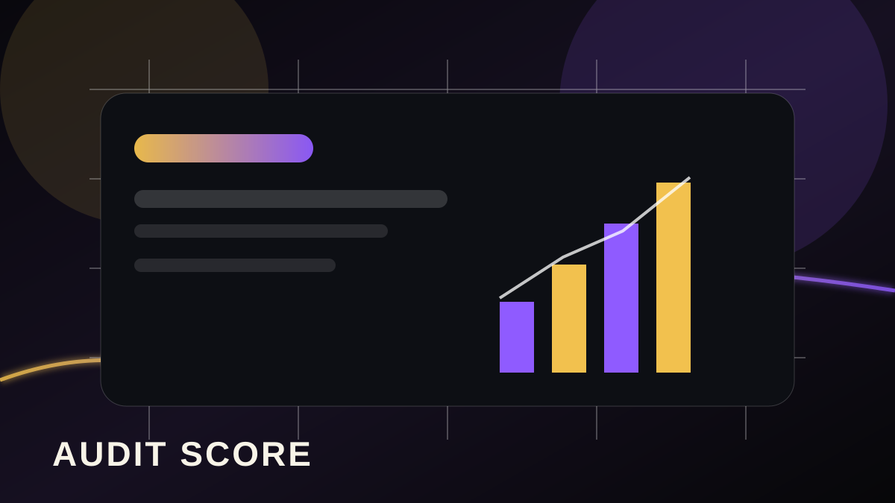

Mesa Visibility Brief
A practical report page for Mesa covering visible trust signals, review readiness, website clarity, and follow-up opportunities.

A practical report page for Mesa covering visible trust signals, review readiness, website clarity, and follow-up opportunities.

The brief looks at public-facing signals: review freshness, service clarity, website trust, mobile usability, contact visibility, and follow-up readiness.
Mesa buyers often compare multiple local providers quickly. Clear proof and fast response pathways help a business stay in the shortlist.
Approved local growth, reputation, booking, and service-area visuals are embedded into city, report, and playbook pages where they support the regional growth story.

Approved proof asset from the supplied production archive, placed here because it supports this page's public claim path.

Approved proof asset from the supplied production archive, placed here because it supports this page's public claim path.

Approved proof asset from the supplied production archive, placed here because it supports this page's public claim path.

Approved proof asset from the supplied production archive, placed here because it supports this page's public claim path.